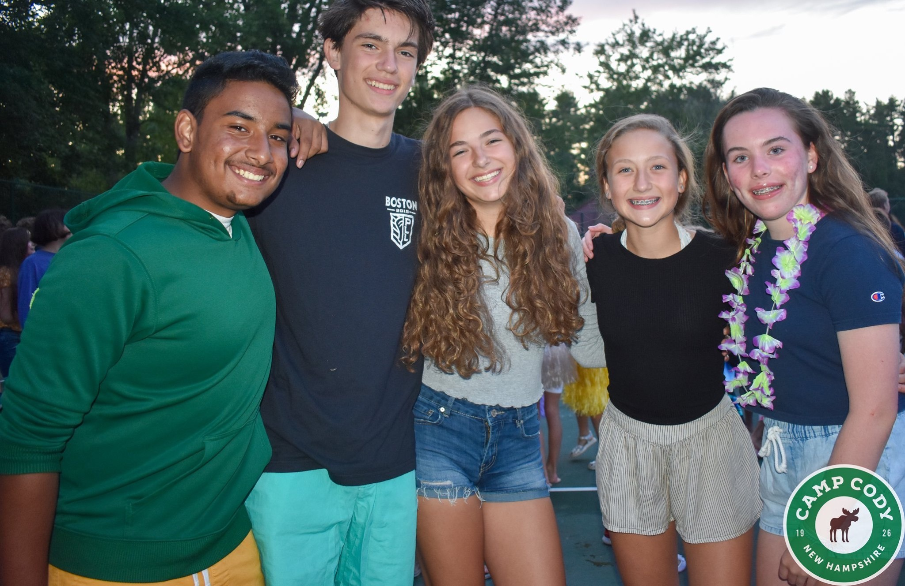
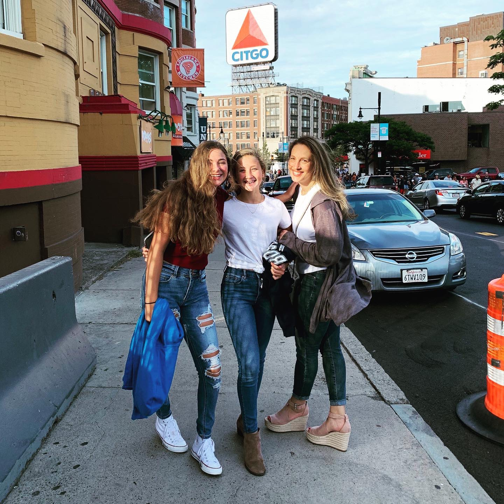
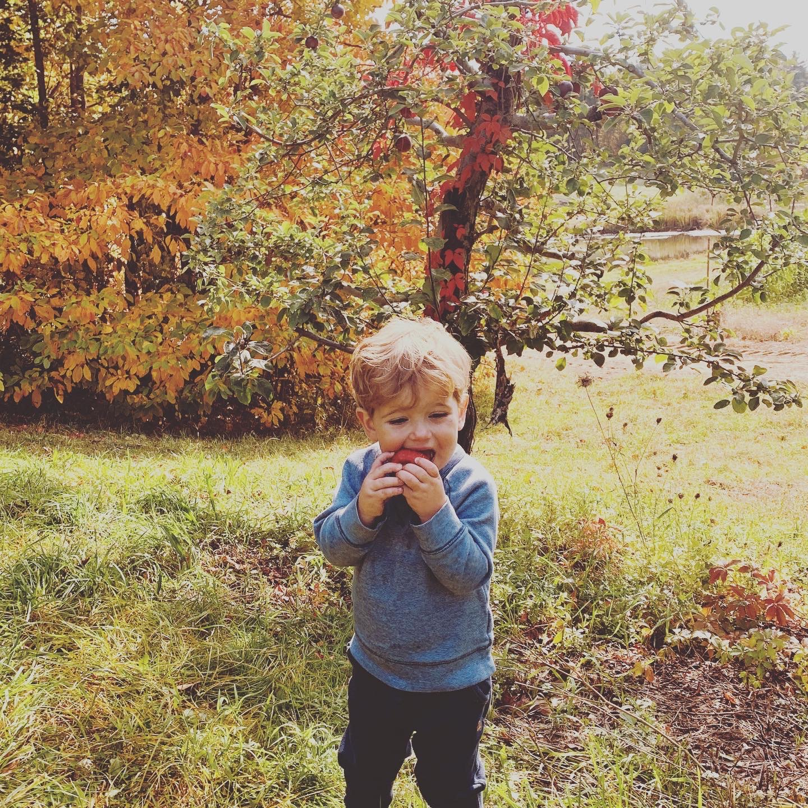
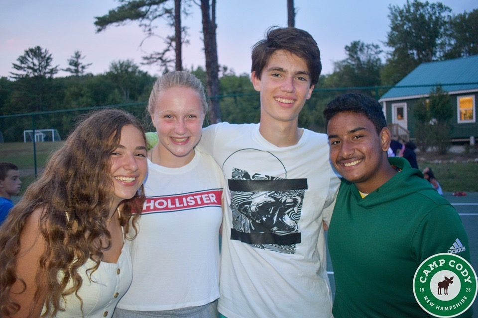
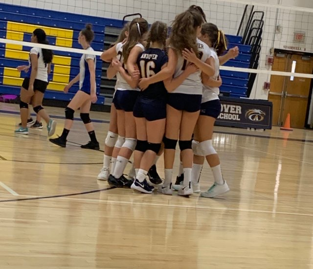
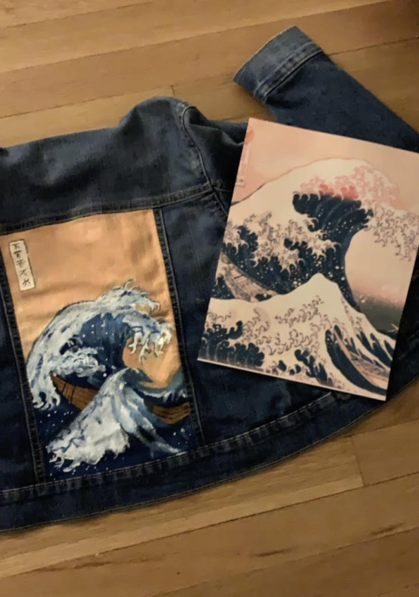
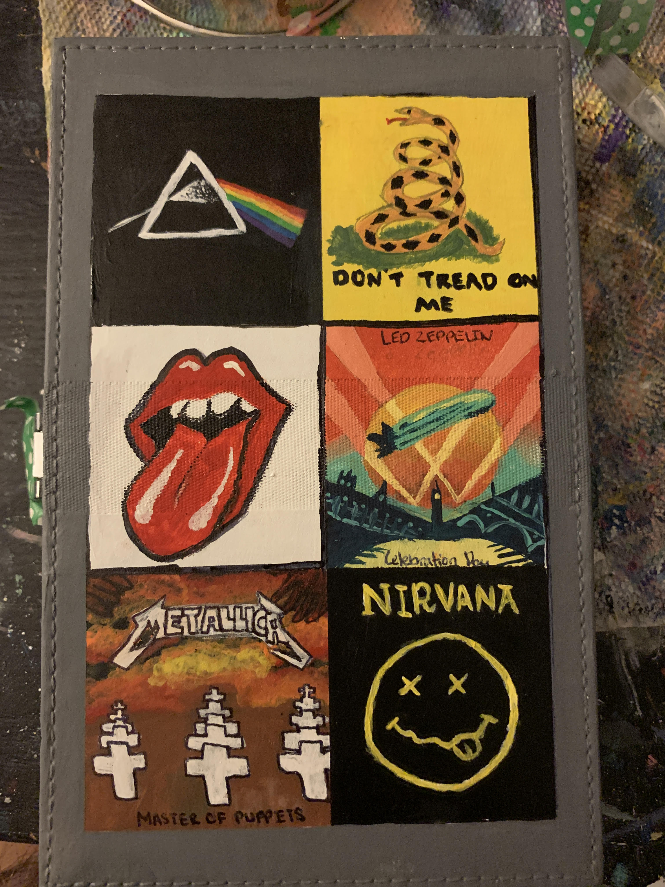
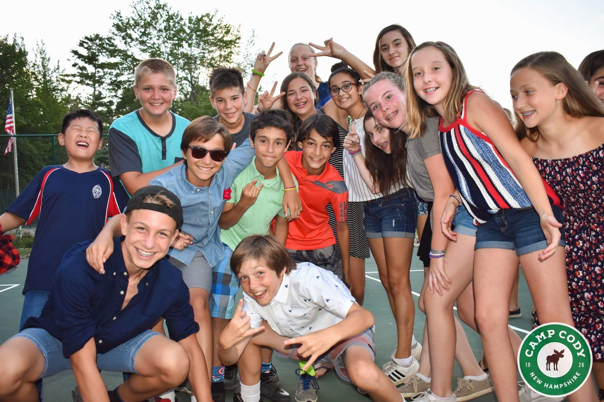

Sophia Pierce
Athlete, sister, artist, reader and leader
Andover, Mass
Andover High School
How would I describe me?
Leader
Hardworking
Determined
Personable
Goal Oriented
Memorable Moments
.JPG)
.JPG)






Athletics
Andover High School Volleball
August 2019 - Current
This year I was a part of the Andover High School Girls Volleyball Program (AHSGV). I was on the freshman team and I played starting setter. I absolutely loved my team and I definitely felt that my skills and mental game both improved during the regular season. I can’t wait until next year and I strongly believe that being part of this program has and will push me to be stronger and work harder.
Evolution Club Team Volleyball
December 2019 - Current
This year is my first year being a member of the Evolution or EVO Club Volleyball program. Last year I participated in the Merrimack Valley Juniors Volleyball team and I enjoyed it but I felt I would be better challenged at EVO. For evo and I am on 15 power which is the highest level team that I could make for my age group that does not participate in tournaments in other countries and states. I am currently playing outside hitter for this team.
Cormier Youth Center Volleyball Clinics + Open Gyms
2016 - Current
I have been a regular participant in all of the volleyball programs at the Cormier Youth Center since 2016. This means all year round clinics and three years of girls travel team. I now play at the Youth Center twice a week on Tuesdays with all girls of highschool age and on Wednesdays with Co Ed players of high school and college age
Leadership + Clubs
Web- Where everyone Belongs
June 2018 - June 2019
Last year I participated in a program at Woodhill middle school called web. THis stands for Where Everyone Belongs and gave me the awesome opportunity to spend time with our incoming sixth graders, give them advice, and help them participate in fun team building activities throughout the year.
Camp Kieve All Star leadership Program
2018-2019
In the 7th grade we took a trip to a leadership camp in maine. I had a lot of fun and was asked to return to the camp in 8th grade due to my leadership skills. Only four kids from each school that went to that camp were asked back to participate in their allstar program. I had a great time met a bunch of new people and was able to better my facilitation skills and come up with ideas to make a difference in my community.
Team Cure Club
September 2019 - Current
Hear at the highschool there are many awesome opportunities to get involved, one of them being clubs. This year I chose to participate In Team Cure club. IN this club we fundraise to make care packages to give to kids that have been diagnosed with diseases including cancer. We also make cards, videos, and save up for experiences to put smiles on the faces of children who fight for their lives on a daily basis. It is a very fulfilling experience and I hope to continue my participation in this club during the rest of my highschool career
Passions
Art/Painting
I absolutely love to paint, and I do it just as a hobby to relax and make something that I can be proud of. I love making of customizing things for my friends and putting smiles on their faces. The funny thing is that I almost never paint on an actual canvas. I prefer to work on things ike cards, boxes, shoes, and other random objects.
 Summer Camp
I go to summer camp at Camp Cody for two weeks every summer, this year I have the pleasure of going for the third year in a row. I love this camp and it is the two best weeks out of my entire year. I get to do so many fun activities and I have met some of the most amazing people from all over the world there. I have made some lifelong friends and I can’t express how positively this place has affected my life.
.JPG)
Nature/Camping
I love being outside and I honestly wish that I didn’t need my phone for so many things. I think that nature I absolutely beautiful and that's the reason that I love camping so much. I used to go on a father daughter camping trip with my sister and my dad every summer but we have gotten so busy that it doesn't always happen. One of my favorite places on earth is next to a lake and I'm always so amazed by the beauty of the world around us.
Family
I am a strong believer that family is the most important thing in a person's life. I would definitely not be where I am in life without my family. Even though things get a little bit crazy I love them to death and I can't thank them enough for what the have done for me. My parents are two of the most hardworking people I know and I am so grateful for all the work they put in to provide a good life for me and my siblings. I have loved being able to see my brothers grow to where they are now and I can't wait to see the people that they will turn out to be. My sister is an amazing person who has always been kind to everyone she's met and I am so proud of the work she has put in to play the level of both soccer and gymnastics that she does.
“Ohana means family and family means nobody gets left behind or forgotten” - Lilo + Stitch